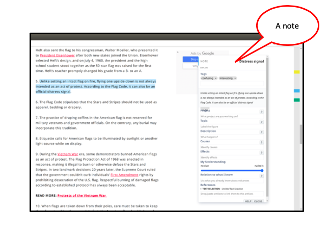

Use a note to elaborate an artifact.
You may be able to choose a specific kind of note, for example, an Explain Note, a Debate Note, an Explore Note.

Why create a note?
Notes help you organize and elaborate information you study. Creating
notes helps rehearse, connect and understand information you read. In a future version of nStudy, you can add your
notes to a
report.